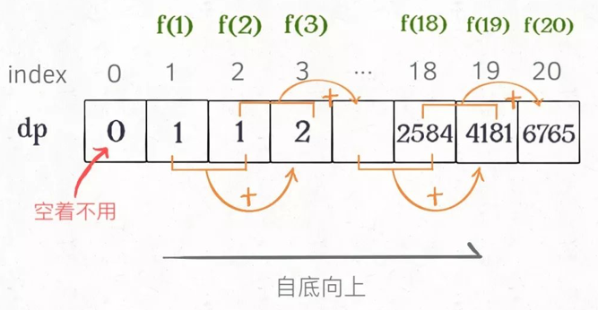
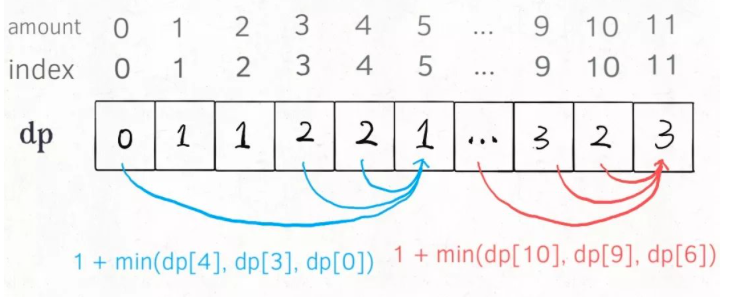
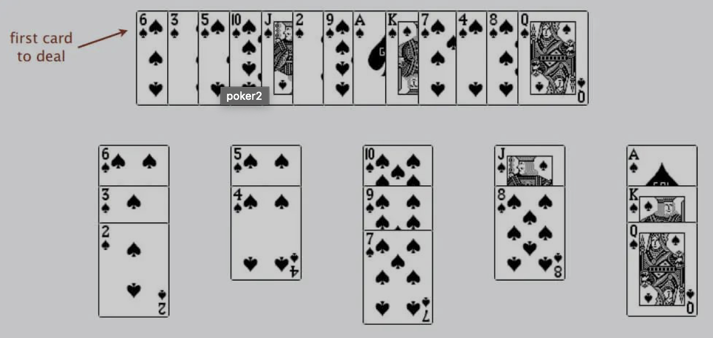

动态规划思想
动态规划问题的一般形式就是求最值，比如说让你求最长递增子序列，最小编辑距离等。
求最值的核心思想是穷举
动态规划问题存在重叠子问题，需要备忘录或者DP table来优化穷举过程，避免不必要的计算。
最优子结构 -> 状态转移方程 -> 自底向上
如何想出正确的状态转移方程：
例：斐波那契数列
dp数组的解法，dp数组的含义就是前两位的和
1
2
3
4
5
6
7
8
9
10
11
12
13
14class Solution:
def fib(self, n: int) -> int:
#定义一个长度为n的dp数组
dp = [0]*n
#数组的base case
dp[0], dp[1] = 0, 1
for i in range(2, n):
dp[i] = dp[i-1] + dp[i-2]
return dp[n-1] % 100000007
#存储空间优化，不用那么长的数组
a, b = 0, 1
for i in range(n):
a, b = b, a+b
return a % 100000007
凑零钱问题：面值1，2，5，总金额 amount = 11 求最少需要几枚硬币凑出
思考如何列出正确的状态转移方程：
1、找到“状态” amount
2、确定dp函数的定义，dp(n)表示当金额为n时需要几枚硬币
3、对于每个状态，可以做什么改变让其转移1
2
3
4
5
6
7
8
9
10
11
12
13
14
15
16
17
18
19
20
21
22
23
24
25
26
27
28
29
30
31
32
33
34
35
36
37
38
39
40
41
42#状态转移函数：
def dp(n):
for coin in coins:
res = min(res, dp(n - coin) + 1)
return res
#完整的解法：
def dp(n):
#base case
if n == 0: return 0
if n < 0: return -1
#求最小值 所以初始化为负无穷
res = float('INF')
for coin in coins:
subproblem = dp(n - coin)
if subproblem == -1: continue
res = min(res, 1 + subproblem)
return res if res != float('INF') else -1
return dp(amount)
#带备忘录的优化解法
def coinChange(self, coins: List[int], amount: int) -> int:
memo = {}
def dp(n):
#查备忘录
if n in memo: return memo[n]
#base case
if n == 0: return 0
if n < 0: return -1
#求最小值 所以初始化为负无穷
res = float('INF')
for coin in coins:
subproblem = dp(n - coin)
if subproblem == -1: continue
res = min(res, 1 + subproblem)
#计入备忘录
memo[n] = res if res != float('INF') else -1
return memo[n]
return dp(amount)
dp数组解法
1
2
3
4
5
6
7
8
9
10#dp[n]表示总和为n时需要的个数
def coinChange(self, coins: List[int], amount: int) -> int:
#base case
dp[0] = 0
#金额当作索引
for i in range(amount):
for coin in coins:
if i - coin < 0: continue
dp[i] = min(1+dp[i-coin], dp[i])
return -1 if dp[amount] > amount else dp[amount]
子序列问题——如何写出正确的状态转移方程
例：最长递增子序列（子序列可以不连续）
输入：nums = [10,9,2,5,3,7,101,18]
输出：4
解释：最长递增子序列是 [2,3,7,101]，因此长度为 4 。
解题步骤
1.子序列的定义：dp[i]表示以num[i]结尾的最长递增子序列 （定义模版见下）
2.base case：dp[0] = 1
3.数学归纳法：假设已知dp[0…4]，如何求dp[5]
将num[5]与num[0…4]比较（循环）
if num[5]大与num[i]，dp[5]就等与dp[i]+1
这样就可以扩展到num[0…i-1]到num[i]
1 | dp = [1]*len(nums) |
nlog(n)二分查找解法
扑克牌游戏，把小的扑克叠在大扑克上，如果没有就新建一个堆

牌的堆数就是lis
二分查找详解：(二分查找技巧)[]1
2
3
4
5
6
7
8
9
10
11
12
13
14
15
16
17
18
19
20
21
22
23
24
25
26
27
28```
## 二维递增子序列问题——信封问题
示例:
输入: envelopes = [[5,4],[6,4],[6,7],[2,3]]
输出: 3
解释: 最多信封的个数为 3, 组合为: [2,3] => [5,4] => [6,7]。
先对宽度 w 进行升序排序，如果遇到 w 相同的情况，则按照高度 h 降序排序。
排序语句：`envelopes.sort(key=lambda x: (x[0], -x[1]))` 以第一位升序第二位降序排序
之后把所有的 h 作为一个数组，在这个数组上计算 LIS 的长度就是答案。
## 子数组问题
子数组是连续的，所以只有两种情况。dp[i]要么和前面的连续，要么不连续（不连续只能自成一派，因为前面的一定是连续的）
1.dp数组的定义：
dp[i]是以num[i]为结尾的数组的最大和
2.base case：
dp[0] = num[0]
3.状态转移(自成一派还是连续)：
dp[i] = max(num[i], dp[i-1]+num[i])
```python
def maxSubArray(self, nums: List[int]) -> int:
dp = [0] * len(nums)
dp[0] = nums[0]
#要注意边界问题，下面是dp[i-1]
for i in range(1,len(nums)):
dp[i] = max(nums[i], dp[i-1]+nums[i])
return max(dp)
最长公共子序列问题LCS
对于两个字符串求公共子序列问题，都是用两个指针i j在两个字符串上移动
1.定义一个dp函数
def dp(s1, i, s2, j)
含义：求s1[i…]和s2[j…]的公共子序列
return dp(s1, 0, s2, 0)
2.base case
i = len(s1)
j = len(s2)
3.状态转移方程
思考每一个字符应该做什么1
2
3
4
5
6
7
8if s1[i] == s2[j]:
#一定在LCS中
return 1 + dp(s1, i+1, s2, j+1)
if s1[i] != s2[j]:
#有三种情况，s1的不在，s2的不在，都不在
return max(dp(s1, i+1, s2, j),
dp(s1, i, s2, j+1),
dp(s1, i+1, s2, j+1))
带备忘录的自顶向下法：1
2
3
4
5
6
7
8
9
10
11
12
13
14m, n = len(s1), len(s2)
memo = [[-1 for i in range(n)] for i in range(m)]
if i == m and j == n:
return 0
if memo[i][j] != -1:
return memo[i][j]
if s1[i] == s2[j]:
memo[i][j] = 1 + dp(s1, i+1, s2, j+1)
else:
memo[i][j] = max(dp(s1, i+1, s2, j),
dp(s1, i, s2, j+1),
dp(s1, i+1, s2, j+1))
return memo[i][j]
自底向上递归法
注意边界值，00，(m+1)*(n+1), 自底从小的往上加1
2
3
4
5
6
7
8
9
10
11
12
13
14
15
16
17
18def longestCommonSubsequence(self, text1: str, text2: str) -> int:
m, n = len(text1), len(text2)
# 构建 DP table 和 base case
# 0,0要空出来
dp = [[0 for i in range(n+1)] for j in range(m+1)]
# 进行状态转移
# 所以下面的要从1开始，并且要相应的-1
for i in range(1, m + 1):
for j in range(1, n + 1):
if text1[i - 1] == text2[j - 1]:
# 找到一个 lcs 中的字符
dp[i][j] = 1 + dp[i - 1][j - 1]
else:
dp[i][j] = max(dp[i - 1][j],
dp[i][j - 1],
dp[i-1][j-1])
return dp[-1][-1]
字符串的删除操作
最少次删除完了就是最长公共子序列，所以可以调用，m-lcs+n-lcs 就是删除次数1
2
3
4
5
6
7
8
9
10
11
12
13
14
15
16
17
18def minDistance(self, word1: str, word2: str) -> int:
m, n = len(word1), len(word2)
s = self.lcs(word1, word2)
return m-s+n-s
def lcs(self, word1, word2):
m, n = len(word1), len(word2)
#base case就是这个初始的dp table
dp = [[0 for i in range(n+1)] for i in range(m+1)]
for i in range(1,m+1):
for j in range(1,n+1):
if word1[i-1] == word2[j-1]:
dp[i][j] = 1 + dp[i-1][j-1]
else:
dp[i][j] = max(dp[i-1][j],
dp[i][j-1],
dp[i-1][j-1])
return dp[m][n]
#O(m*n)
动态规划之子序列问题解题模板
dp[i][j]
当涉及两个字符串的时候（求LCS）：dp 数组的含义是子数组arr1[0..i]和子数组arr2[0..j]中，最长公共子序列长度为dp[i][j]。
只有一个字符串的时候（回文子序列）：dp 数组的含义是子数组array[i..j]中，最长回文子序列的长度为dp[i][j]。1
2
3
4
5
6
7
8
9
10
11m, n = len(s1), len(s2)
dp = [[0 for i in range(n+1)] for i in range(m+1)]
for i in range(1,m+1):
for j in range(1,n+1):
if s1[i-1] == s2[j-1]:
dp[i][j] = 1 + dp[i-1][j-1]
else:
dp[i][j] = max(dp[i-1][j],
dp[i][j-1],
dp[i-1][j-1])
return dp[m][n]
回文问题
回文子串
双指针
如果您喜欢此博客或发现它对您有用，则欢迎对此发表评论。 也欢迎您共享此博客，以便更多人可以参与。 如果博客中使用的图像侵犯了您的版权，请与作者联系以将其删除。 谢谢 ！